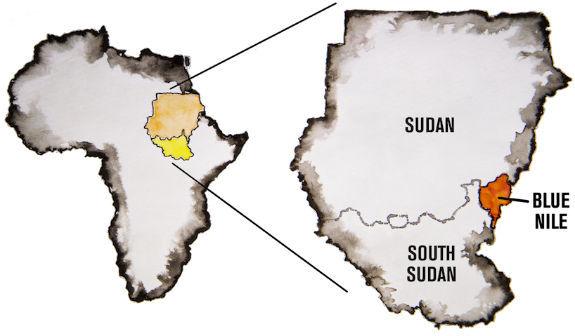
Blue Nile State sits wedged in the southernmost part of Sudan, with Ethiopia to the east and South Sudan across the western border. On this map, the purple areas represent sites of active fighting. The original front line cuts northwest across the state. The Ingessana Hills, rebel leader Malik Agar's birthplace, is the only patch of SPLA-N controlled territory north of the front lines.
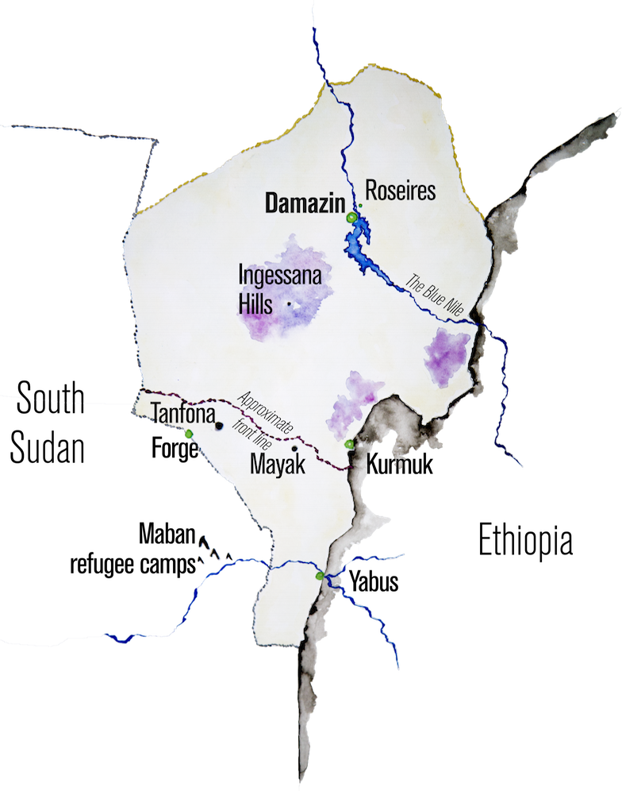
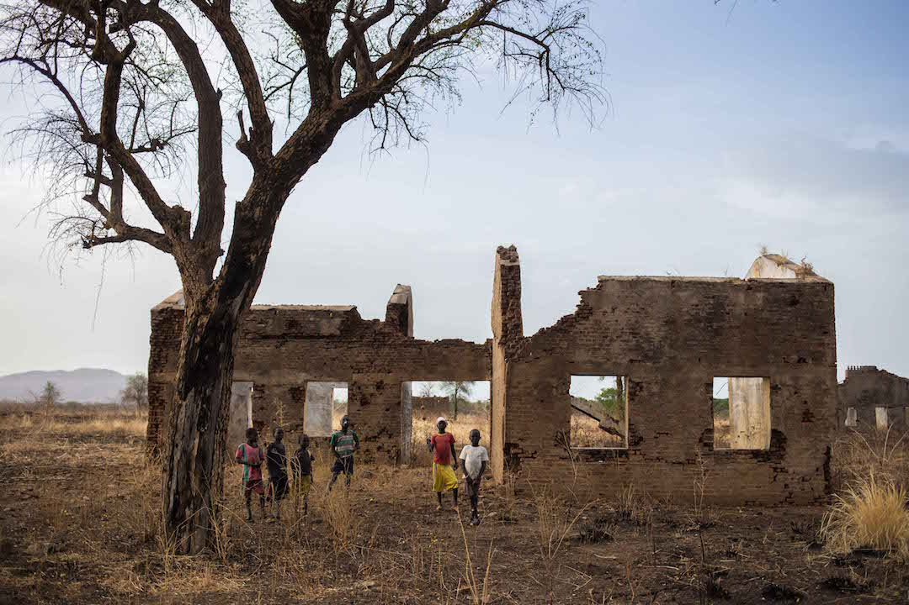
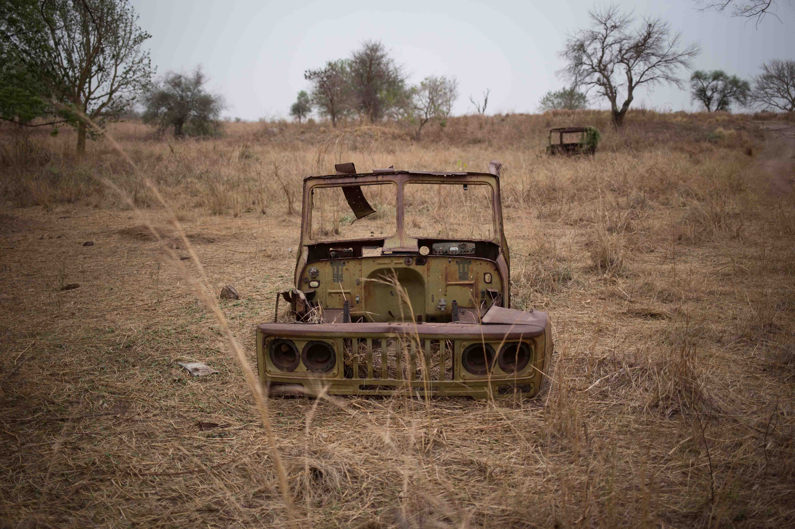
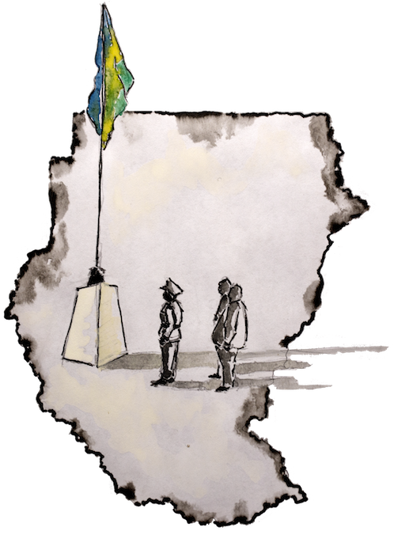
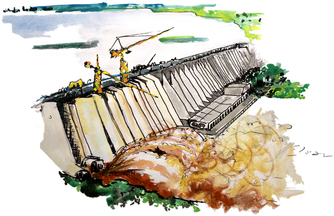
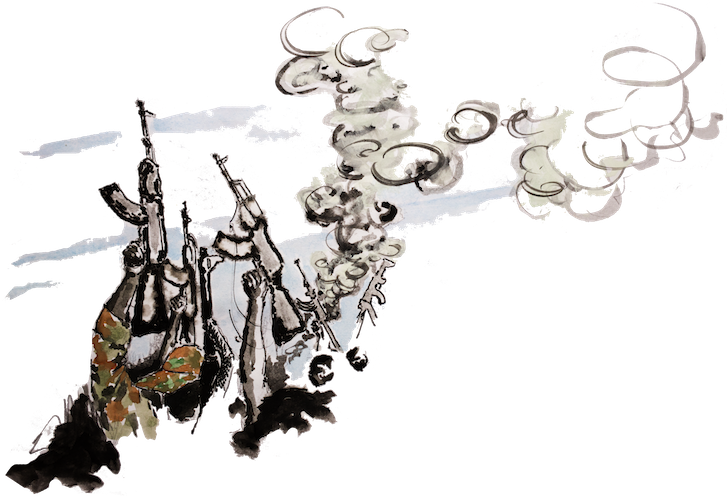
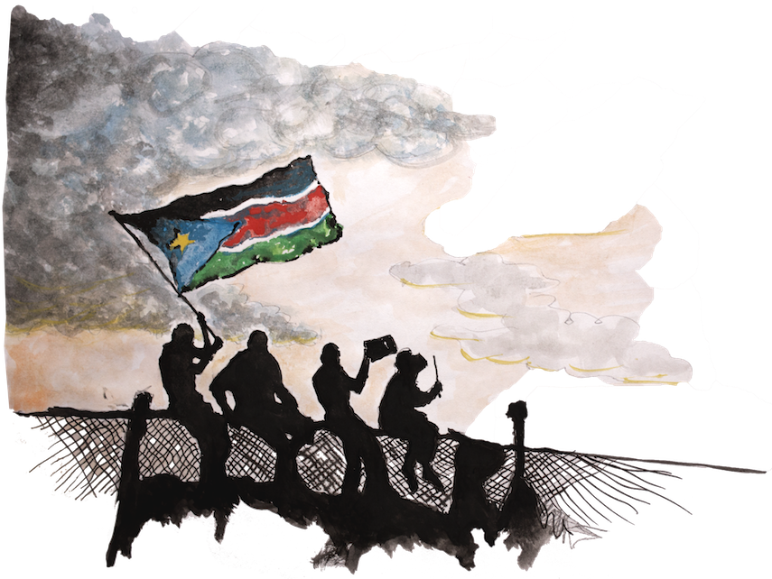
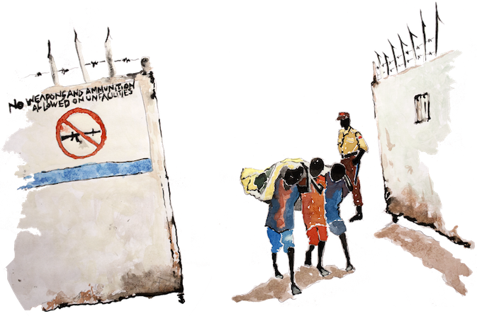
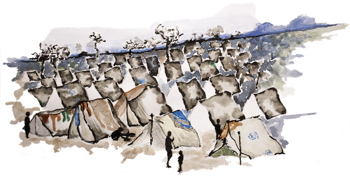
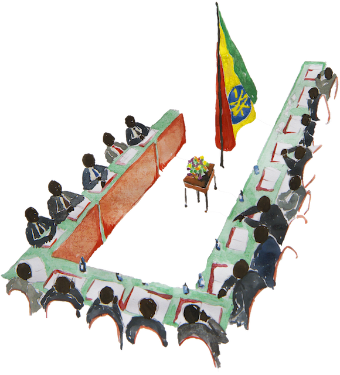
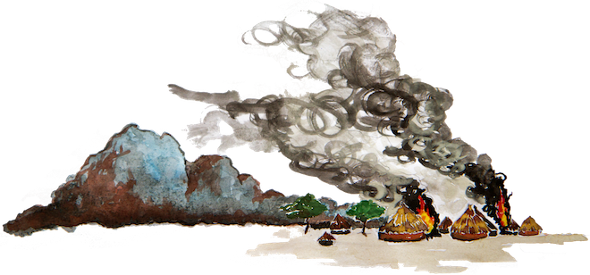
January 1, 1956
Sudan becomes an independent nation after 57 years of British colonial rule. A secessionist struggle in the south is already under way.
1971
The Roseires Dam, the second largest in Africa, opens in 1966 and is updated in 1971 with the installation of a 1,800 MW hydroelectric plant, feeding power to swathes of the country.
1983
Sudan's second civil war breaks out. The people of Blue Nile and South Kordofan (Nuba Mountains) side with southern Sudan, fighting against their marginalisation by the government in the north. The conflict rages for more than two decades.
2005
The Comprehensive Peace Agreement (CPA) is signed, intended to lay out a path to peace to end the conflict. A vaguely defined ‘popular consultation' is promised for Blue Nile and the Nuba Mountains. The failure of this to materialise is a key catalyst in the return to war.
September, 2011
A small skirmish quickly spirals into all-out war in Blue Nile, two months after South Sudan becomes an independent country. Malik Agar is ousted as the sitting governor. The capital of Damazin quickly falls to Sudanese government troops, while stronghold Kurmuk falls shortly after.
December 15, 2013
Civil war breaks out in South Sudan, squeezing humanitarian resources and increasing instability for Blue Nile refugees sheltering in that country.
2015
The Sudanese government and a coalition of opposition groups including SPLM/A-North meet for the latest round of peace talks in Addis Ababa, Ethiopia. No resolution is reached.
2016
Fierce fighting rages in Blue Nile's Ingessana Hills, expanding the conflict into a new front and provoking a fresh wave of displaced civilians.
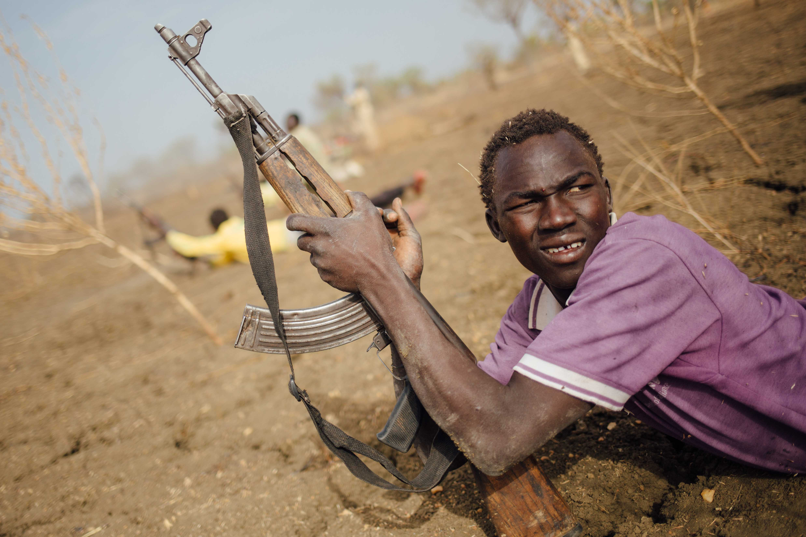
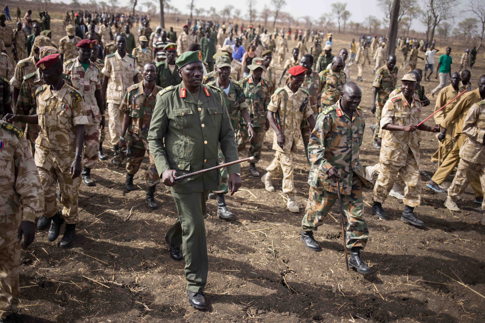
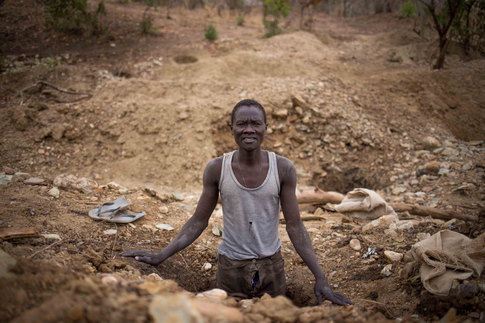
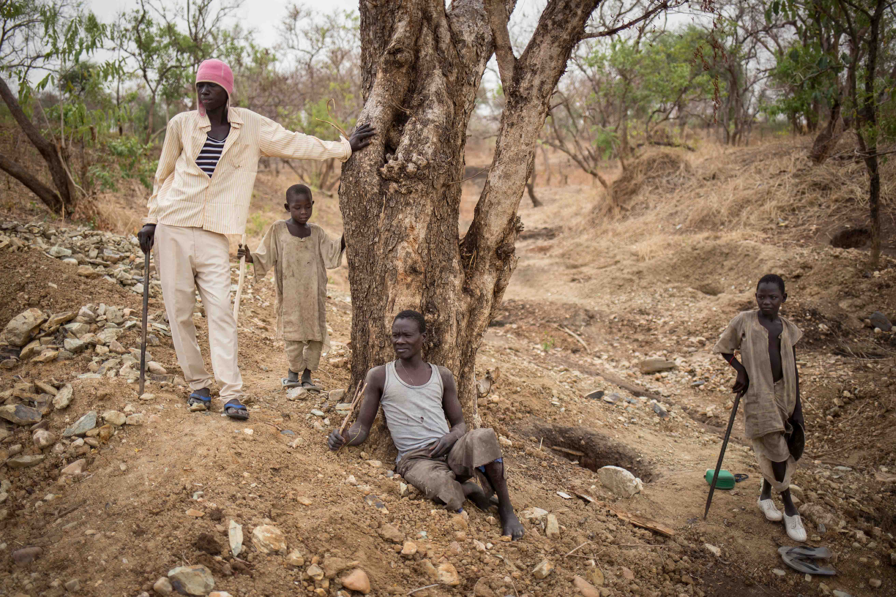